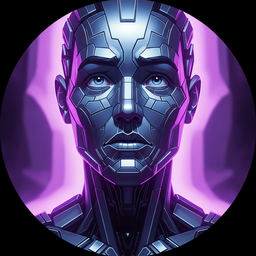
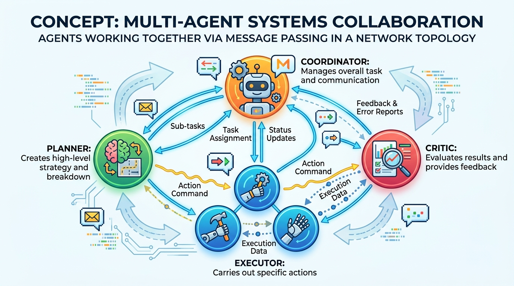

"None of us is as smart as all of us."

Census AI Agent

Chapter Overview
While a single agent equipped with the right tools can accomplish many tasks, the most complex real-world problems benefit from multiple specialized agents working together. Multi-agent systems decompose difficult challenges into subtasks handled by agents with distinct roles, expertise, and capabilities. This mirrors how effective human teams operate: a project manager coordinates, researchers gather information, writers produce content, and reviewers ensure quality.
This module covers the full stack of multi-agent development. It begins with a practical survey of agent frameworks, comparing how LangGraph, CrewAI, AutoGen, and native provider SDKs approach the problem of building agents. It then explores multi-agent architecture patterns including supervisor hierarchies, debate protocols, and pipeline topologies. The module concludes with agentic workflows and pipelines, where you will build production-grade systems with conditional branching, error recovery, checkpointing, and human-in-the-loop oversight.
By the end of this module, you will be able to select the right framework for your use case, design multi-agent architectures that balance autonomy with coordination, and build robust agentic workflows that handle the messy realities of production environments.
Who: A platform engineering team at Salesforce building their Einstein AI service layer (2024).
Situation: Salesforce handled millions of customer support tickets daily across dozens of product lines, each requiring specialized domain knowledge that no single LLM prompt could cover.
Problem: A monolithic agent approach led to bloated system prompts exceeding 15,000 tokens, slow response times, and frequent hallucinations when the agent confused product domains.
Dilemma: The team could either build one massive agent with every tool attached (simple to deploy but unreliable) or architect a multi-agent system (complex to build but specialized and accurate).
Decision: They chose a supervisor pattern: a lightweight routing agent classified incoming tickets and delegated them to domain-specialist agents for billing, technical support, account management, and product recommendations.
How: Each specialist agent had a focused system prompt under 2,000 tokens and access to only its relevant tools (database queries, API calls, knowledge bases). The supervisor agent used a simple classification model to route requests.
Result: Resolution accuracy jumped from 67% to 89%, average response latency dropped by 40%, and hallucination rates fell by over 60% because each agent only operated within its domain of expertise.
Lesson: Specialization through multi-agent decomposition often outperforms a single "do everything" agent, just as a team of specialists outperforms one generalist trying to handle every role.
Learning Objectives
- Compare LangGraph, CrewAI, AutoGen, and native SDKs for building agents and multi-agent systems
- Implement the same agent across multiple frameworks to understand their trade-offs
- Design supervisor, debate, pipeline, and hierarchical multi-agent architectures
- Understand conformity effects and groupthink risks in multi-agent deliberation
- Build state machine workflows with conditional branching, loops, and parallel execution
- Implement checkpointing, error recovery, and compensation logic for long-running workflows
- Design human-in-the-loop review gates at critical decision points
- Build a complete multi-agent research pipeline from planning through review
Building a multi-agent system is a lot like assembling a heist crew in a movie. You need the planner, the specialist, the smooth talker, and the one who double-checks everything. The only difference is that when your LLM agents argue, they do it in JSON instead of dramatic whispers.
Prerequisites
- Chapter 21: AI Agents (agent foundations, tool use, planning, code execution)
- Chapter 09: LLM APIs (chat completions, message formatting, system prompts)
- Chapter 10: Prompt Engineering (chain-of-thought, structured outputs)
- Familiarity with Python async programming and graph data structures
- Basic understanding of state machines and workflow concepts
Sections
- 22.1 Agent Frameworks 🟡 ⚙️ 🔧 LangGraph internals (directed graphs, TypedDict state, conditional edges, checkpointing). CrewAI role-based collaboration. AutoGen/AG2 conversational patterns. OpenAI Agents SDK, Anthropic Claude Agent SDK, Smolagents, PydanticAI, and Google ADK. Builds on LLM API foundations.
- 22.2 Multi-Agent Architecture Patterns 🔴 ⚙️ Supervisor pattern, debate pattern, pipeline pattern, and hierarchical agents. Shared memory and message passing. Conformity effects in multi-agent systems and ICLR 2025 groupthink research.
- 22.3 Agentic Workflows & Pipelines 🔴 ⚙️ 🔧 Workflow engines (LangGraph state machines, Temporal). Conditional branching, loops, parallel execution, error handling, retries, and compensation logic. Checkpointing, streaming results, and building a multi-agent research system. Prepares for real-world LLM applications.
- 22.4 Production Multi-Agent Systems 🔴 ⚙️ Deploying multi-agent systems in production, scaling agent orchestration, monitoring and debugging agent interactions, failure recovery patterns, and operational best practices for multi-agent architectures.
Who: A three-person ML team at a Series A fintech startup building an automated compliance review system (2024).
Situation: The team needed to build an agent that could review loan applications against regulatory requirements, pulling from multiple data sources and producing structured audit reports.
Problem: They initially prototyped with CrewAI because of its simple role-based API, but discovered that the "crew" abstraction was too rigid for their workflow, which required conditional branching based on loan type and regulatory jurisdiction.
Dilemma: CrewAI was faster to prototype but lacked fine-grained control over execution flow. LangGraph offered directed graph workflows but had a steeper learning curve and more boilerplate.
Decision: They migrated to LangGraph, using its TypedDict state management and conditional edges to model the branching compliance logic explicitly.
How: Each node in the LangGraph workflow represented a compliance check (identity verification, credit scoring, regulatory lookup), with conditional edges routing applications through different paths based on jurisdiction and loan amount thresholds.
Result: The LangGraph version handled 12 distinct regulatory pathways cleanly, with built-in checkpointing that let reviewers resume interrupted evaluations. The CrewAI prototype had required ugly workarounds for the same logic.
Lesson: Framework choice depends on workflow complexity. Simple role-based tasks suit higher-level abstractions like CrewAI; complex conditional workflows with state management favor graph-based frameworks like LangGraph.
Who: Researchers at Microsoft Research exploring multi-agent debate for code review (2024).
Situation: The team wanted to improve automated code review quality beyond what a single LLM pass could achieve, particularly for security-sensitive code.
Problem: Single-agent code review missed subtle security vulnerabilities about 35% of the time, and simply asking the same model twice rarely caught different issues.
Dilemma: Adding more review passes with the same agent showed diminishing returns. The model tended to repeat its own blind spots rather than discovering new issues.
Decision: They implemented a debate pattern using AutoGen, where a "red team" agent deliberately looked for vulnerabilities while a "defender" agent argued the code was safe, with a "judge" agent synthesizing the final review.
How: Each agent had a distinct system prompt and persona. The red team agent was instructed to be adversarial and creative in finding attack vectors. The defender had to justify each design choice. The judge weighed both arguments and produced the final assessment.
Result: The debate protocol caught 28% more security vulnerabilities than the single-agent baseline, with the adversarial framing pushing the red team agent to consider attack vectors the single agent consistently overlooked.
Lesson: Diversity of perspective, even among AI agents, produces better outcomes than consensus. Assigning opposing roles forces models to explore different parts of the problem space.
Researchers discovered that if you put three LLM agents in a debate, they will sometimes start agreeing with each other just to be polite. The technical term for this is "sycophantic convergence," but honestly it just sounds like every committee meeting you have ever attended.
Who: The site reliability engineering (SRE) team at Uber building automated incident triage (2024).
Situation: Uber's microservice architecture generated hundreds of alerts daily, and on-call engineers spent significant time triaging incidents before even beginning to diagnose root causes.
Problem: Manual triage took an average of 12 minutes per incident, and during cascading failures, the queue of unprocessed alerts could grow faster than engineers could handle them.
Dilemma: A fully autonomous system risked taking incorrect remediation actions on production services. A purely advisory system would still leave engineers overwhelmed during peak incidents.
Decision: They built a multi-agent pipeline with human-in-the-loop gates: an intake agent classified severity, a diagnostics agent gathered logs and metrics, a recommendation agent proposed fixes, and a human reviewer approved or rejected actions above a risk threshold.
How: The workflow used checkpointing so that if a human reviewer was unavailable, the system queued the recommendation and resumed when approved. Low-risk actions (restarting a single pod, clearing a cache) were auto-approved; high-risk actions (scaling down a service, rolling back a deployment) required explicit human sign-off.
Result: Average triage time dropped from 12 minutes to under 90 seconds for auto-approved actions. The human-in-the-loop gates caught three potentially harmful automated actions in the first month, validating the tiered autonomy approach.
Lesson: Production multi-agent workflows need graduated autonomy. Let agents handle routine decisions independently, but insert human checkpoints at high-consequence decision boundaries.
Bibliography
Foundational Papers
Key Books
Tools & Libraries
What's Next?
In the next section, Section 22.1: Agent Frameworks, we survey agent frameworks like LangGraph, CrewAI, and AutoGen that provide the building blocks for agent development.